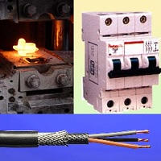

About Debashish
Hindi Blogger, Podcaster, Software Professional from Bhopal
-
Bhopali Banarasi
I was born at Varanasi, situated on the banks of the holy Ganga, although in all practical sense I have been a Bhopali, for I was brought up here, in the capital city of India’s erstwhile largest state - Madhya Pradesh. I did my schooling from Raman Higher Secondary School, part of the education society schools of Public sector giant BHEL and named after the renowned Indian Nobel laureate. I attained my Bachelors in Electrical engineering from Awadhesh Pratap Singh University, Rewa (land of the white tigers). Apart from this, I have been attained PG diplomas in Operations and Marketing Management (from IGNOU, Delhi) and PG Diploma in Advanced Computing (from CDAC).
-

Those Geocities days
I am a Software Consultant based at Pune (and an erstwhile blogger and podcaster). Have been on the Internet since the Yahoo Geocities days; opened my Blogger account in October 2002. On Geocities I hosted couple of sites including an Amitabh Bachchan fan site.
-

Those Geocities days
I have English blog Null Pointer and a Hindi one NuktaChini, though most of his blogging has now been replaced by micro-blogging at Twitter.